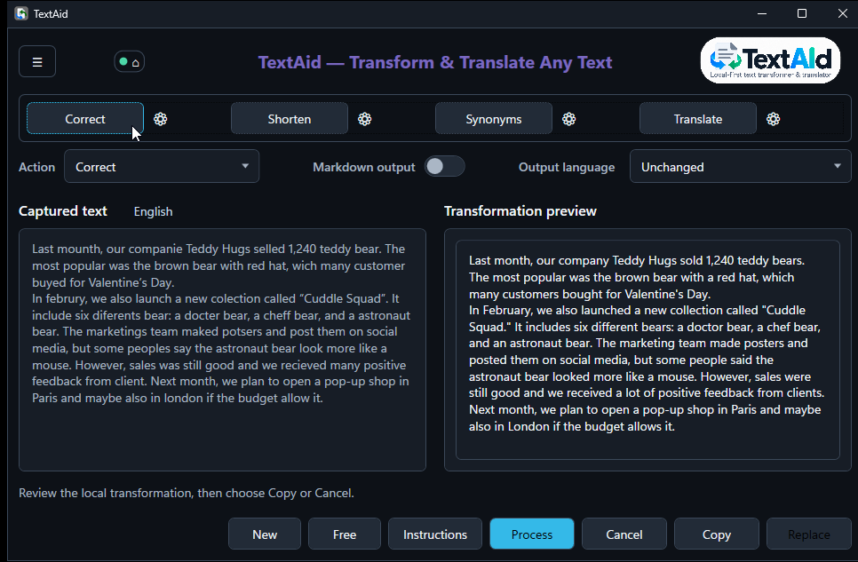

The workspace
The main window keeps your input and the new text side by side. You can refine the request before you decide what to do with the result.
Work with a passage
- Edit the text in Captured text if needed. Choose an Action from the list, or click one of the four preset buttons above it.
- Choose an Output language. Unchanged keeps the input language for ordinary actions.
- Choose Process to run the selected action. Read the Transformation preview before choosing Copy or Replace.

When you have no selection
Choose can open with no captured text. Type or paste directly into Captured text and run an action. You can also choose New to start a fresh input in the current window.
Free opens a separate input box for a direct request, such as “Draft a short, polite reminder about tomorrow’s meeting.” It does not keep a source selection to replace, so use Copy for its result.
Refine one run
Instructions lets you add guidance for this transformation, such as “Use a warmer tone.” It is temporary; changing the action’s permanent prompt belongs in Actions.
Switch on Markdown output when you want Markdown formatting. After processing, use the raw and rendered controls in the preview to inspect the markup. Leave it off for plain text.